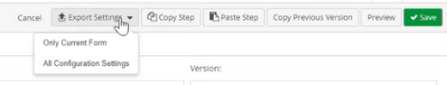
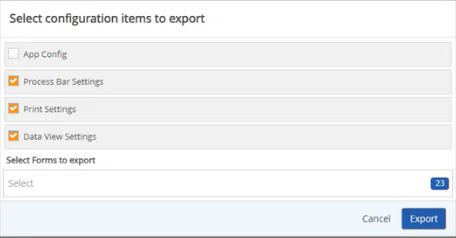

Exporting Advanced Workflows (WAB) Settings to a JSON File
Exporting Advanced Workflows (WAB) settings from one solution to another allows users to build Advanced Workflows (WAB) settings for a different solution with similar configurations.
When you click the Export Settings button there are two options you can select from:
Only Current Form
All Configuration Settings
If Only Current Form is selected, then only the current form is exported into a JSON file.
If All Configurations Settings is selected, the Select Configuration items to export window opens, where you can select which tabs and settings in the designer form you would like to export into a JSON file.
To Export the Current Advanced Workflows (WAB) Form
From the main menu dropdown, select Designer to open Forms Designer.
Click the Forms tab.
Click the Form Type dropdown textbox and select a child workflow type.
Clickthe Workflow Step dropdown textbox and select a workflow step where forms are present.
Click Export Settings.
Click Only Current Form.
The Current Form saves as a JSON file in your downloads.
To export All Configuration Settings
From the main menu dropdown, select Designer to open Forms Designer.
Click the Forms tab.
Click the Form Type dropdown textbox and select a child workflow type.
Clickthe Workflow Step dropdown textbox and select a workflow step where forms are present.
Click Export Settings.

Click All Configuration Settings. The Select Configuration Items to Export window opens.

On the Select Configuration Items to export window select the following as needed:
App Config contains settings from the App Config tab which is used to build the Advanced Workflows (WAB) solution.
Process Bar Settings contains the settings created in terms of the naming of Process Bar steps and the related workflow steps it is connected to.
Print Settings contains the settings used to print an Advanced Workflows (WAB) solution such as the section included and excluded for printing purposes.
Data View Settings contains any Data View fields that exist on the current form.
Select Form to export dropdown textbox allows you to choose which forms you want to export. By default, all forms of the current Advanced Workflows (WAB) solution will be selected. If you want select specific forms, you can select None to deselect all forms selected, and then select specific forms you want to export.
Click Export. All the settings selected from the current Advanced Workflows (WAB) solution is exported as a JSON file in the downloads folder.